Balint's Portfolio
Balint's Portfolio

Overview
Featured Projects
Welcome to my portfolio showcasing selected projects across robotics, computer vision, and software engineering. Each project demonstrates my technical expertise and problem-solving approach in different domains.
Autonomous Drone Landing Using Vision


- Advanced software architecture integrating multiple systems
- Deep Neural Network object detection for real-time target recognition
- Visual servo control using image recognition techniques
- Computation accelerated with low-power FPGA technology
- Fully autonomous operation with all computation performed onboard
- Technologies: ROS, PX4, DPU, PYNQ, ZMQ, Python, Jupyter
- Published in IEEE
Core Software for Robotics
- High-performance robot control systems in C++ and Python
- Real-time sensor data processing and fusion
- Robust communication stack for network and embedded systems
- Optimized for industrial robotics applications
Java/Swing/URCap App for Robotics
- Seamless API integration for Universal Robots
- Reliable communication between robots and peripheral devices
- Efficient data handling and processing
- Intuitive Swing-based graphical user interfaces
- Modular architecture for extensibility and maintenance
Full Stack Web Application for Robotics
- Complete solution using Angular, Express, Node.js, and TypeScript
- Large-scale modular application architecture
- Comprehensive supervision and control of robotics systems
- Advanced geometrical calculations and visualizations
- Responsive interface for monitoring robotic operations
Micro Mouse Challenge

- Autonomous maze-solving robot with custom hardware and software
- Custom 3D printed components and PCB design
- Precise motor control using MOSFET PWM techniques
- Bluetooth connectivity for debugging and monitoring
- SLAM implementation for mapping and localization
- Path planning algorithms for efficient navigation
- Real-time control system with sensor integration
- Implemented in C++ for embedded systems
Robotics and Computer Vision Project
This project integrates robotics with advanced computer vision techniques:
Simulated workcell with robot, camera, and objects
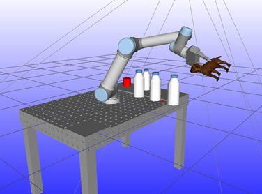2D to 3D pose estimation using RGB template matching
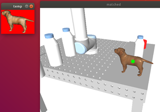3D pose estimation using point cloud from depth sensor
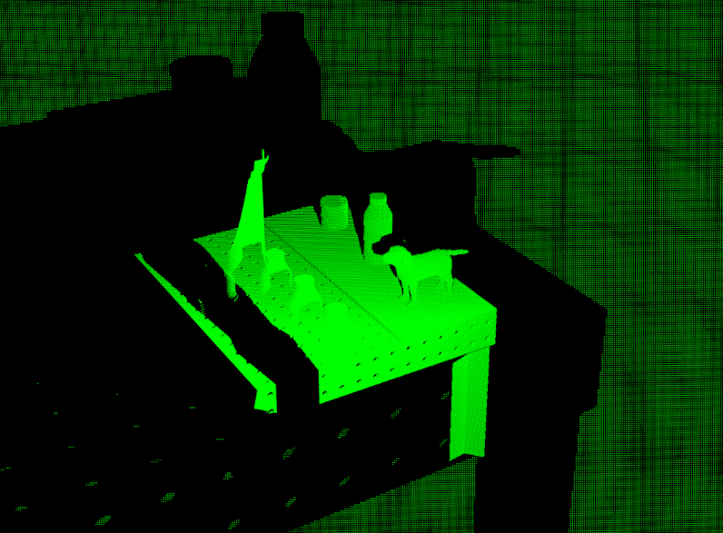
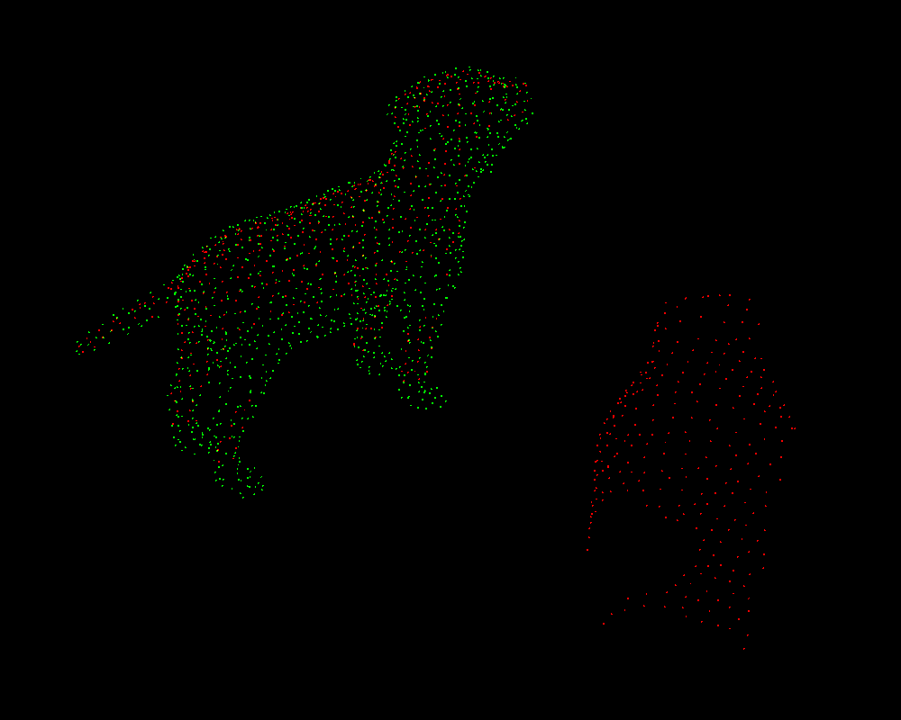
Benchmarking artificial noise profiles
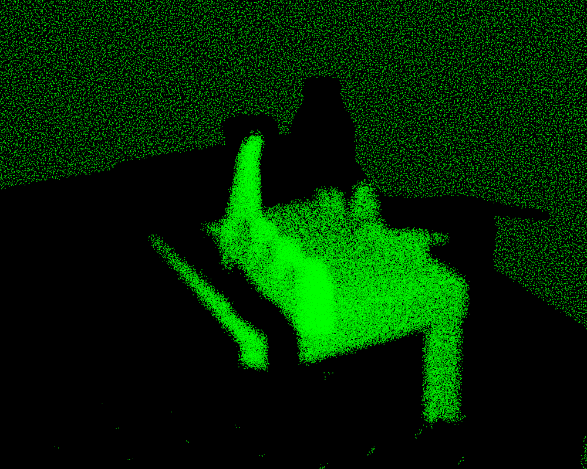

Path planning using RRT Connect with optimization
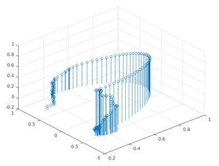

Additional features:
- Trajectory interpolation for smooth robot movement
- Reachability optimization for complex environments
- Seamless integration with user interface
- Technologies: RobWork, OpenCV, Point Cloud Library, C++
Traffic Analysis Computer Vision Project
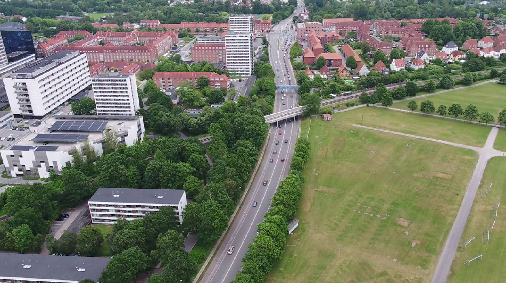
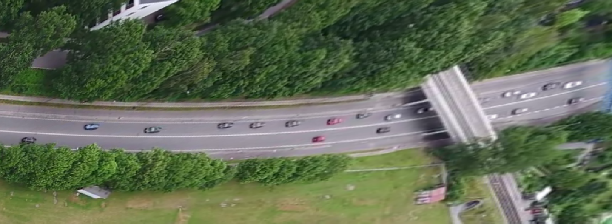
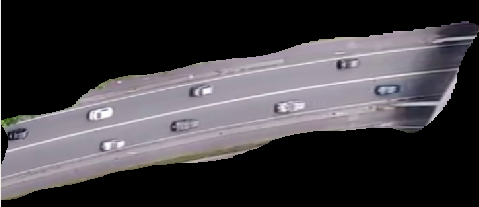
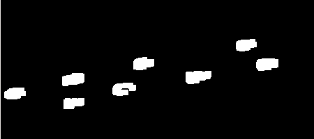

- Real-time video processing pipeline for traffic monitoring
- Homography transform for perspective correction
- Advanced filtering techniques for noise reduction
- Clustering algorithms for vehicle identification
- Multi-object tracking system
- Technologies: OpenCV, ROS, Python
Sokoban Solver with LEGO Mindstorms

- Physical implementation of the classic Sokoban puzzle game
- Robust controller with sensor feedback (Python)
- Optimal path planning using A* algorithm (C++)
- Integration of AI planning with physical robotics
Ludo AI Player
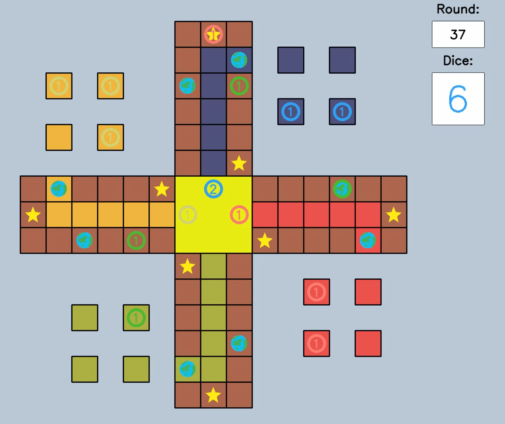
- Fully connected neural network implementation in Python
- Reinforcement learning approach for game strategy
- Training through simulated matches against various AI opponents
- Performance evaluation and strategy analysis
Drone Swarm Alignment Project
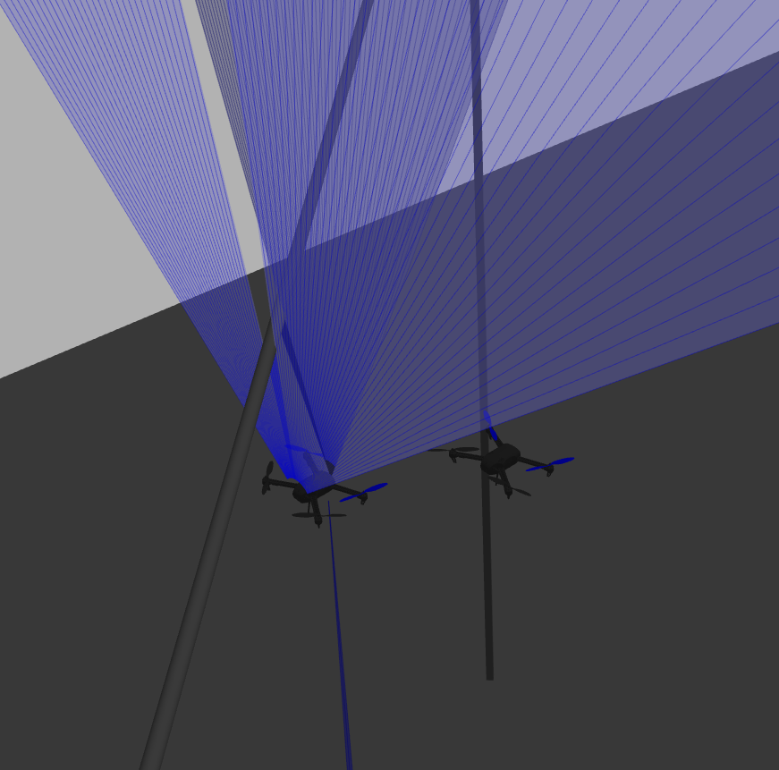
- Multi-drone coordination system
- Gazebo simulation environment for testing
- Control algorithms using radial distance sensors
- Technologies: ROS, PX4, MAVROS, Python
Interactive Game: Dodge The Creeps
- Browser and mobile-compatible game
- Developed with Godot Engine
- Features fluid motion, animations, music, and sound effects
- Enemy AI and scoring system
- Play the game in your browser
Cryptography Challenge
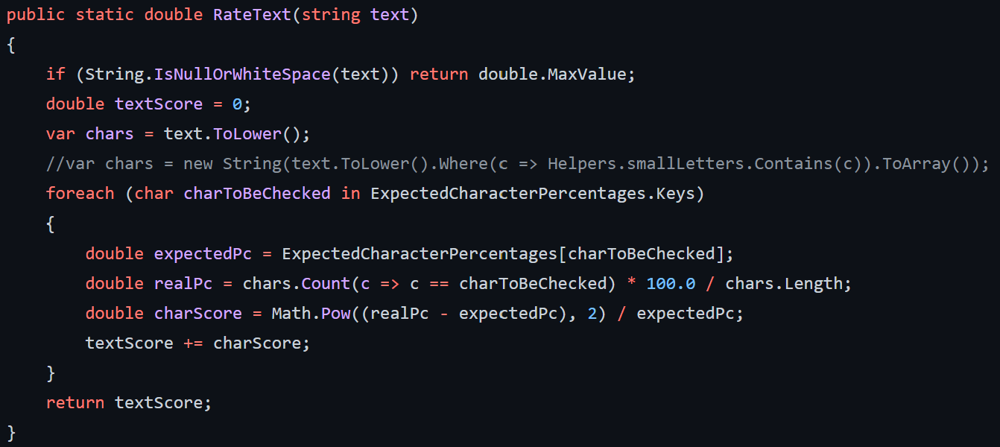
- Implementation of various encryption algorithms
- Techniques for cryptanalysis and breaking encryption
- Developed in C#.NET
Additional Projects
- Enterprise webstore configuration and related retail applications
- Marker-based autonomous drone landing simulation
- Computer vision system for counting pumpkins in drone footage
- Custom OcTree implementation with data payload
- 3D first-person shooter game in Godot engine
- Python-based automated video player
- Python Django web service
- Python Kivy GUI application
- Automated PowerPoint presentation system in C#.NET
- Advanced Windows Speech Recognition Macros
- FPGA-controlled battery charger
- Motorized stereo camera system for 3D vision